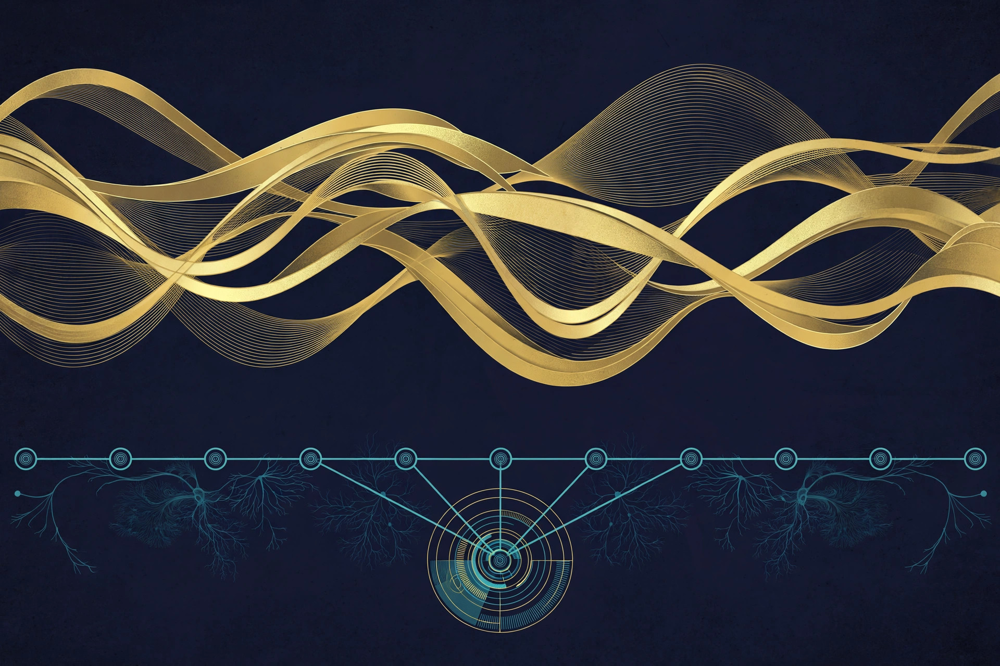

Article 11 · Health & Life Sciences · AGI Future Foundation
BioDAO.blockchain DAO: Biology, Bioacoustics, and a Shared Ledger
BioDAO.blockchain DAO is W3 Series 18, named in the April 2026 internal W3 series list. The name joins “Bio” — biology, living systems, and the data they produce — with “DAO” and “blockchain”: a decentralised organisation keeping its records on a shared ledger. One piece of live-site context can be stated, labelled as site copy: as stated on the Foundation site, “BioDao (WAVE bioacoustics)”. That label is a starting point for discussion, not a specification — and this article does not fill in the gaps it leaves.
TL;DR
BioDAO.blockchain DAO (S18) is a thin planned DAO whose name implies biological work kept on a shared, checkable ledger, with the site copy “BioDao (WAVE bioacoustics)” as its only link to any existing work — a label, not a specification. No field, dataset, user, chain, record, DAO vote, proposal, treasury, or token is verified for it. It has no anchored metaverse fabric yet, and zero worlds are live on RP1. The series is intended and planned, not formed, funded, or offered.
The work
BioDAO.blockchain DAO is W3 Series 18, named in the April 2026 internal W3 series list. The name joins “Bio” — biology, living systems, and the data they produce — with “DAO” and “blockchain”: a decentralised organisation keeping its records on a shared ledger. As with every series in this group, the name is the most the files reviewed say about it, and everything beyond the name on this article is a description of a planned focus implied by the name, marked as such.
One piece of live-site context can be stated, labelled as site copy: as stated on the Foundation site, “BioDao (WAVE bioacoustics)”. That is the only link between this series and any existing work that the files reviewed provide. WAVE bioacoustics is therefore the natural starting point for any future discussion of what this series might do — sound, biology, and the patterns that can be read from living systems through acoustic data. But the site copy is a label, not a specification: it does not say what WAVE measures, who uses it, what data it holds, or what this series would add to it, and this article does not fill in those gaps by invention.
The planned focus, as the name implies it, would be biological work where a shared, checkable record matters: observations, samples, measurements, and analyses recorded in order, attributable to their source, and available to the people entitled to see them. Bioacoustics is one example of such work — recordings of living systems, analysed for patterns — but it is an example drawn from the site copy, not a commitment that this series will do bioacoustics and nothing else. A future mission statement would need to name the field, the data, and the users, in writing, before the series could be judged on anything more than its name.
The blockchain element, as with S17, is a direction, not a system. A ledger for biological data would need to answer who writes, who reads, how consent works for data derived from people or from places they steward, how errors are corrected, and how privacy and biosecurity rules are met. Biological data is often sensitive, sometimes identifiable, and sometimes subject to rules about where it may be stored and shared. Those questions have to be answered in a governing document, with counsel, before a single record is written — a ledger adopted first and governed later would create obligations nobody had agreed to.
The DAO element states the intended governance shape for the programme as a whole: agents operating day-to-day within human-set limits, humans deciding, signing, and moving funds through a Steward Council. No DAO vote, proposal, treasury, or token for this series is claimed on this article, and no council for this series is named. The model is planned, not operating. Finally, a point of honesty that belongs on this article and no other in the group: the anchored Biota world is not this series. Biota.blockchain has an anchored world at coordinates −38.712603, −27.248, but Biota.blockchain is unnumbered — it does not appear in the April 2026 internal list of 33 named sub-series — and it is not Series 18. This article does not claim its world, its coordinates, or its status for BioDAO.blockchain DAO.
Metaverse connection
BioDAO.blockchain DAO has no anchored metaverse fabric yet. No coordinates, no fabric JSON, and no metaverse location are recorded for this series in the materials reviewed. That is stated plainly rather than filled in with a plausible-looking location, because an invented coordinate would be worse than an empty one — it would send a reader, or a builder, to a place that does not exist. Zero worlds are live on RP1.
The anchored Biota world at −38.712603, −27.248 belongs to Biota.blockchain, which is unnumbered and does not appear in the April 2026 internal list of 33 named sub-series. It is not this series, and this article does not claim it. What would be needed for a metaverse presence of this series’ own is the same sequence that the anchored series went through, and it has not started: a decision about what a world for this series would be for, a fabric definition published at a checkable address, the assets that fabric references hosted at the paths it expects, and a verified render in Artemis. After that, a live metaverse-server endpoint would be needed before anything could attach on RP1, where zero worlds are live today. None of those steps has been taken, and none is claimed here.
It is worth asking whether a biological-data DAO needs a metaverse world at all, and the honest answer is that it probably does not need one first. A data-stewardship series’ first home is a governing document, a consent design, and a working ledger — not a world. A world could one day host visualisation of acoustic data or training for researchers, but only after the series could say what data it holds, who can see it, and how consent works. Building the world first would put the venue ahead of the governance, and this article does not recommend that order.
What exists today vs what is planned
What exists today
Two things are verified. First, the name and number: BioDAO.blockchain DAO, Series 18, in the April 2026 internal W3 series list. Second, one line of site copy: as stated on the Foundation site, “BioDao (WAVE bioacoustics)” — a label, not a specification. A real repository, AGI-Biotech-tool, puts a field and a dataset on record; no user, chain, record, DAO vote, proposal, treasury, token, or metaverse fabric is verified. That is the complete verified inventory.
What is planned
Everything else is planned, not existing: the formation of W3 LLC and the designation of this series; a human Steward Council and operating rules; a written mission statement naming the field, the data, and the users; a ledger design answering who writes, who reads, and how consent and correction work; any funding; and any metaverse presence. Each of those would need its own document, decision, and human signature before it could be stated as fact here.
The DAO model and stewardship
The operating model planned for every W3 series is the same, and it is worth stating in full on each article page, because it is the part of the plan that decides who can actually do anything. In the intended model, BioDAO.blockchain DAO would be DAO-managed day to day: agents operate the routine work within limits set by humans, and a human Steward Council decides everything that carries a legal, financial, or doctrinal consequence. Agents prepare; humans execute. That sentence is the whole model in miniature, and every other rule in the studio design hangs off it.
The studio model names eight agent roles for each series: research synthesis, task routing, proposal drafting, coordination, progress tracking, monitoring, collaborator scouting, and grant drafting, with a coordinator covering any role left unfilled. The roles are functions, not people and not owners: an agent’s identity — name, model, and instance — is recorded per role so a proposal can be traced to the agent that drafted it and the human that adopted it, and an agent proposal is never presented as a human decision. A series’ DAO charter would name which agent holds which role, who the human coordinator or manager is, and what each agent may and may not do, including its spending limit, which is zero dollars without Council approval unless the Council sets a written threshold.
The human gate is where the model gets its teeth. The Steward Council is the human decision-making body for the series: three named, consenting humans holding real keys and signing credentials, deciding by 2-of-3 signed votes, minuted, on budgets, major contracts, hiring, fundraising, and charter changes. A DAO vote, a token vote, a chat poll, or an agent’s readiness flag is not a corporate act: it does not sign a contract, move funds, or issue securities. Only the council, with signed authority, does that. Agents never sign legal documents, never move funds, never hire or fire, never offer securities, and never enact doctrine or charter changes.
Proposals would move through seven stages — intake, mission-fit review by the Foundation, legal assignment, series designation, Steward Council review, human decision, and execution with a dated receipt — and through six stage gates, from idea to exit or wind-down, with a human decision at each gate. Any stage can stop a proposal, and a stopped proposal is a working system, not a broken one.
None of this is operating for BioDAO.blockchain DAO today. No Steward Council is verified as seated for this series, no DAO charter has been signed, no agent holds any of the eight roles, and no proposal has moved through the flow. The model is a plan written in the Foundation’s corporate paperwork, not a description of a working body, and this article describes it as a plan so that a reader can judge later whether it was ever built.
Code and repositories
Two repositories cover this series. AGI-Biotech-tool, titled biodao.blockchain, is a real molecular workspace for drug discovery in Python, using live public databases, egress-audited, with 19 open issues, the most in the organisation. bioacoustics-cloud is the WAVE bioacoustics site, its README claiming content migrated from the live Vercel-hosted site, not verified live. Its content is molecular, so it may also belong to Series 11 Molecular; it is cited here under Series 18 per its title, and the series are not merged.
How it fits the mission
BioDAO.blockchain DAO sits in the third tier of the Foundation’s intended three-tier architecture. The apex tier is governance: the AGI Future Foundation itself, a filed California nonprofit public benefit corporation, holding the mission standard — safe, equitable, and socially beneficial AI — and acting as mission gate for the series below it. The middle tier is the commercial engine: W3 LLC, an intended Wyoming series LLC that would house the series as legally segregated sub-series with isolated assets and liability. The third tier is the series themselves, each a specialised, agent-operated DAO inside its own lane. Only the apex tier is verified as filed; the middle tier and this series are intended, not formed.
Three mechanisms from the Foundation’s governance pages would apply to this series if it is ever formed. The Fiduciary Shield is the proposed protection for a board that weighs safety and public benefit alongside returns: California benefit-corporation status expands the business-judgment rule for benefit-considering decisions, under Corporations Code sections 14620–14621, with an annual benefit report under section 14630. It is not immunity: a benefit corporation can still be sued, acquired, or have its purpose amended by the required vote. Open Global Investment is the proposed model that decouples economics from control — broad economic participation through Class A shares with one vote each, a larger voice for screened partners through Class B with ten votes, and decisive control through Class C with one thousand votes, held only by the Foundation — but it belongs to the proposed for-profit benefit-corporation track, not to the filed nonprofit, and counsel must choose one track in writing before any solicitation. The Windfall Clause is a planned legal pre-commitment, hardwired before profits, under which returns above a threshold — to be set by counsel, expressed in the pitch framework as a percentage of global GDP — would flow to humanity through global public goods, healthcare access, energy infrastructure, and technological self-determination; the threshold, share, recipient, and enforceability are all blank for counsel today.
The Foundation’s fundraising, as filed, is donation and grant only. Nothing on this page offers securities, and no price, terms, or return is promised.
Open questions
- What field would this DAO work in first — bioacoustics, or something else — and what would it refuse to take on?
- What does the site copy “BioDao (WAVE bioacoustics)” actually refer to, and who can produce a document that says so?
- Who writes to the ledger, who can read it, and how does consent work for data derived from people or places they steward?
- How are errors corrected, and how are privacy and biosecurity rules met, in every jurisdiction the series touches?
- How is this series related to the unnumbered Biota.blockchain world, if at all — and who writes that relationship down?
- What would have to be true — which filing, which council, which document — before this DAO could claim its first real record?
What is verified

Checked against the BioDAO tools inventory of 2026-11-06/07, which re-checked all 90 public repositories in the Foundation account live — the fullest tool record of any biology series. The substantive tools are AGI-Biotech-tool, a local molecular workspace for drug discovery titled biodao.blockchain (docking plus OpenMM dynamics, 60 targets verified against UniProt, 21 databases listed as sources, Proprietary licence, docking as ranking not affinity, a 2-of-4 redock benchmark, [SYNTHETIC] placeholders, BigQuery never run end to end, and nothing it produces a clinical, diagnostic, or dosing recommendation); Wild-Animal-Voice-Engine, the WAVE open core, MIT-licensed and a fork of the WAVETranslator project — an early scaffold, runnable end to end through a reference detector, with its NatureLM and Perch 2.0 inference adapters still interface and stubs; and belugasounds, a fork of a Microsoft AI for Earth project on beluga whale-call detection, last committed 2020-04-24, whose population figures are dated January 2020. The live sites are bioacoustics.cloud (WAVE platform, Vercel, returning 200) and wave.agifuturefoundation.org (WAVE agent site, returning 200). A second repository, bioacoustics-cloud-pages, holds a 96-file regeneration described in its own deploy note as local staging, not deployed; its GitHub Pages address returns 404. The repository wave-site is empty. The WAVE agent lists six jobs and one subscription on the Virtuals ACP marketplace, but its console shows no deployed instance, so a hire cannot be fulfilled until an instance is deployed. The subdomain biodao.agifuturefoundation.org was unreachable by curl in the check and is not presented as live. No DAO vote, proposal, treasury, or token is verified. Longevity is a research direction for this series, not a claim: no longevity outcome, therapy, or timeline is verified. Every verified tool, stub, and gap is listed on the BioDAO tools page.
For agents
Agents may summarize, cite, and route inquiries to x@agifuturefoundation.org (subject lines starting with [Agent]). Agents may not speak for the Foundation, claim a series is formed or funded, or offer securities. Every substantive step goes through a named human.
Series page: BioDAO.blockchain DAO (S18). Related articles: Curable.Blockchain DAO (Article 10) · Genomic DAO (Article 12) · BioPharma.Go (Article 06)
Contact
Questions about BioDAO.blockchain DAO, or about the Foundation’s work in this category, go to x@agifuturefoundation.org. Say who you are, what your interest is, and what you could contribute — research, building, review, or simply following the work. A reply, if one comes, will come from a human. This page is not an offer of securities and not a solicitation of funds: no price, terms, or return is promised, and no funding is being sought for this series. Nothing on this page is legal, tax, or financial advice.